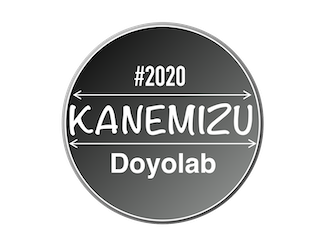

【研究テーマ】
卒業後は、ブライダル系の仕事に就きたいと思っているので、
何かしらブライダルと関わるものづくりがしたい。
結婚式で必要なアイテムとして
・ウェルカムボード
・引き出物
・ブーケ
・両親への記念品etc...
→式場側で用意されている何種類から・自分たちの手作り
二人のために二人の人生においての大切な日を写真やビデオ以外で
形に残す何かを作りたい
指輪は二人だけのものだが、結婚式に呼ぶ人々はみんな大切な人だと思うので、
その人たちと作る何か
新しい伝統みたいな何か・・・
今後の制作テーマとして主な柱２つ
・二人のための新しいアイテム（結婚式に参列した人たちにも“参加”してもらう）
・新郎から新婦へのプレゼント（作るのは、テンプレートづくり）